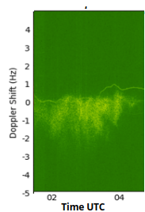

Two Hop F Region Side Scatter¶
Title: Very Weak Two Hop F Region Sidescatter
Contributed by: Bob Mattaliano N6RFM
Reviewed by:
Receiving Station Location: EM12jw, near Fort Worth, TX 22January2026
Receiving Station Details: Grape-1 DRF
Feature Description

Very weak two-hop F region sidescatter - when radio signals reach a receiver after two ionospheric hops with a ground scatter in between. Since the receiver is not directly in line of propagation, weaker and more scattered signals are observed. The faint thin line is an artifact